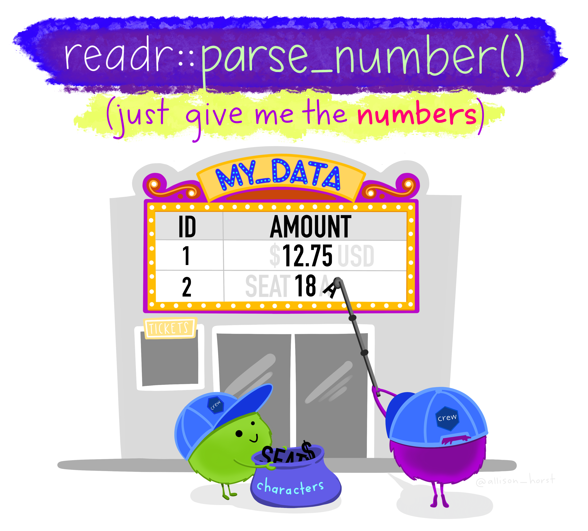

2 Data wrangling
Intended Learning Outcomes
In this chapter, we are building upon the skills from level 1, bringing together all of the functions you already encountered (and probably forgotten over the summer break) with perhaps introducing 2 or 3 new functions. It’s as much a revision chapter as well as providing an opportunity to apply the functions to a novel dataset.
By the end of this chapter you should be able to:
- apply familiar data wrangling functions to novel datasets
- read and interpret error messages
- realise there are several ways of getting to the results
Individual Walkthrough
The main purpose of this chapter is to wrangle your data into shape for data visualisation (Chapter 3 and Chapter 4). Here, we will:
- calculate demographics
- tidy 3 different questionnaires with varying degree of complexity
- solve an error mode problem
- join all data objects together
But first, we need to set up some things.
2.1 Activity 1: Setup
- We will be working on the dataset by Pownall et al. (2023) again, which means we can still use the project we created last week. The data files will already be there, so no need to download them again.
- To open the project in RStudio, go to the folder in which you stored the project and the data last time, and double click on the project icon.
- Create a new Rmd for chapter 2 and save it to your project folder. Name it something meaningful (e.g., “chapter_02”, “02_data_wrangling.Rmd”). See Section 1.3 if you need some guidance.
- In your newly created Rmd file, delete everything below line 12 (after the set-up code chunk).
2.2 Activity 2: Load in the libraries and read in the data
We will use tidyverse today, and we want to create a data object data_prp that stores the data from the file prp_data_reduced.csv.
If you need a quick reminder what the dataset was about, have a look at the abstract in Section 1.4. We also addressed the changes we made to the dataset there.
And remember to have a quick glimpse() at your data.
2.3 Activity 3: Calculating demographics
Let’s start with some simple data wrangling steps to compute demographics for our original dataset, data_prp. First, we want to determine how many participants took part in the study by Pownall et al. (2023) and compute the mean age and the standard deviation of age for the sample.
2.3.1 … for the full sample using summarise()
The summarise() function is part of the “Wickham 6” alongside group_by(), select(), filter(), mutate(), and arrange(). You used them plenty of times last year.
Within summarise(), we can use the n() function, which calculates the number of rows in the dataset. Since each row corresponds to a unique participant, this gives us the total number of participants.
To calculate the mean age and the standard deviation of age, we need to use the functions mean() and sd() on the column Age respectively.
demo_total <- data_prp %>%
summarise(n = n(), # participant number
mean_age = mean(Age), # mean age
sd_age = sd(Age)) # standard deviation of ageWarning: There were 2 warnings in `summarise()`.
The first warning was:
ℹ In argument: `mean_age = mean(Age)`.
Caused by warning in `mean.default()`:
! argument is not numeric or logical: returning NA
ℹ Run `dplyr::last_dplyr_warnings()` to see the 1 remaining warning.| n | mean_age | sd_age |
|---|---|---|
| 89 | NA | NA |
R did not give us an error message per se, but the output is not quite as expected either. There are NA values in the mean_age and sd_age columns. Looking at the warning message and at Age, can you explain what happened?
Fixing Age
Might be wise to look at the unique answers in column Age to determine what is wrong. We can do that with the function distinct().
One cell has the string “years” added to their number 25, which has converted the entire column into a character column.
We can easily fix this by extracting only the numbers from the column and converting it into a numeric data type. The parse_number() function, which is part of the tidyverse package, handles both steps in one go (so there’s no need to load additional packages)
We will combine this with the mutate() function to create a new column called Age (containing those numeric values), effectively replacing the old Age column (which had the character values).

Computing summary stats
Now we can try calculating the demographics for the total sample again. However, we also saw that age_distinct that Age contains some missing values (NA). We need R to ignore those for the calculations, so we add the extra argument na.rm = TRUE to the mean() and sd() functions. If we don’t, we’d be back at NA values for those 2 columns.
2.3.2 … per gender using summarise() and group_by()
Now we want to compute the summary statistics for each gender. The code inside the summarise() function remains unchanged; we just need to use the group_by() function beforehand to tell R that we want to compute the summary statistics for each group separately. It’s also a good practice to use ungroup() afterward, so you are not taking groupings forward unintentionally.
demo_by_gender <- data_prp %>%
group_by(Gender) %>% # split data up into groups (here Gender)
summarise(n = n(), # participant number
mean_age = mean(Age, na.rm = TRUE), # mean age
sd_age = sd(Age, na.rm = TRUE)) %>% # standard deviation of age
ungroup()
demo_by_gender| Gender | n | mean_age | sd_age |
|---|---|---|---|
| 1 | 17 | 23.31250 | 5.770254 |
| 2 | 69 | 21.57353 | 2.738973 |
| 3 | 3 | 21.33333 | 1.154700 |
2.3.3 Adding percentages
Sometimes, it may be useful to calculate percentages, such as for the gender split. You can do this by adding a line within the summarise() function to perform the calculation. All we need to do is take the number of female, male, and non-binary participants (stored in the n column of demo_by_gender), divide it by the total number of participants (stored in the n column of demo_total), and multiply by 100. Let’s add percentage to the summarise() function of demo_by_gender. Make sure that the code for percentages is placed after the value for n has been computed.
Accessing n for the different gender categories is straightforward because can refer back to it. However, since the total number of participants is in a different data object, we need to use some baseR functionality to access it - namely via the $ operator. You just have to name the data object (here demo_total), then use the $ (straight after, without any spaces), and then name the column you want to access (here n).
demo_by_gender <- data_prp %>%
group_by(Gender) %>%
summarise(n = n(),
# n from the line above divided by n from demo_total *100
percentage = n/demo_total$n *100,
mean_age = mean(Age, na.rm = TRUE),
sd_age = sd(Age, na.rm = TRUE)) %>%
ungroup()
demo_by_gender| Gender | n | percentage | mean_age | sd_age |
|---|---|---|---|---|
| 1 | 17 | 19.101124 | 23.31250 | 5.770254 |
| 2 | 69 | 77.528090 | 21.57353 | 2.738973 |
| 3 | 3 | 3.370786 | 21.33333 | 1.154700 |
round()
Not super important, because you could round the values by yourself when writing up your reports, but if you wanted to tidy up the decimal places in the output, you can do that using the round() function. You would need to “wrap” it around your computations and specify how many decimal places you want to display (for example mean(Age) would turn into round(mean(Age), 1)). It may look odd for percentage, just make sure the number that specifies the decimal places is placed within the round function. The default value is 0 (meaning no decimal spaces).
demo_by_gender <- data_prp %>%
group_by(Gender) %>%
summarise(n = n(),
percentage = round(n/demo_total$n *100, 2), # percentage with 2 decimal places
mean_age = round(mean(Age, na.rm = TRUE), 1), # mean Age with 1 decimal place
sd_age = round(sd(Age, na.rm = TRUE), 3)) %>% # sd Age with 3 decimal places
ungroup()
demo_by_gender| Gender | n | percentage | mean_age | sd_age |
|---|---|---|---|---|
| 1 | 17 | 19.10 | 23.3 | 5.770 |
| 2 | 69 | 77.53 | 21.6 | 2.739 |
| 3 | 3 | 3.37 | 21.3 | 1.155 |
2.4 Activity 4: Questionable Research Practices (QRPs)
The main goal is to compute the mean QRP score per participant for time point 1.
Looking at the QRP data at time point 1, you determine that
- individual item columns are , and
- according to the codebook, there are reverse-coded items in this questionnaire.
So we just have to compute an average score for items 1 to 11 as items 12 to 15 are distractor items. Seems quite straightforward.
The downside is that individual items are each in a separate column, i.e., in wide format, and everything would be easier if the items were arranged in long format.
So let’s tackle this problem in steps. Best would be to create a separate data object for that. If we wanted to compute this within data_prp, it would turn into a nightmare.
-
Step 1: select the relevant columns
Code, andQRPs_1_Time1toQRPs_1_Time1and store them in an object calledqrp_t1 -
Step 2: pivot the data from wide format to long format using
pivot_longer()so we can calculate the average score more easily (in step 3) -
Step 3: calculate the average QRP score (
QRPs_Acceptance_Time1_mean) per participant usinggroup_by()andsummarise()
qrp_t1 <- data_prp %>%
#Step 1
select(Code, QRPs_1_Time1:QRPs_11_Time1) %>%
# Step 2
pivot_longer(cols = -Code, names_to = "Items", values_to = "Scores") %>%
# Step 3
group_by(Code) %>% # grouping py participant id
summarise(QRPs_Acceptance_Time1_mean = mean(Scores)) %>% # calculating the average Score
ungroup() # just make it a habit2.5 Activity 5: Confidence in understanding Open Science practices
The main goal is to compute the mean Understanding score per participant.
Again, we only have to compute that for time point 1 because the mean Understanding score for time point 2 was already calculated (column Time2_Understanding_OS).
Looking at the Understanding data at time point 1, you determine that
- individual item columns are , and
- according to the codebook, there are reverse-coded items in this questionnaire.
So the steps are fairly similar to QRP, but we add an extra step, namely turning the character labels into numbers.
Again, let’s do this step by step:
-
Step 1: select the relevant columns
Code, and every Understanding column from time point 1 (e.g., fromUnderstanding_OS_1_Time1toUnderstanding_OS_12_Time1) and store them in an object calledunderstanding_t1 -
Step 2: pivot the data from wide format to long format using
pivot_longer()so we can recode the labels into values (step 3) and calculate the average score (in step 4) more easily -
Step 3: Recode the values “Not at all confident” as 1 and “Entirely confident” as 7. All other values are already numbers. We can use functions
mutate()in combination withcase_match()for that -
Step 4: calculate the average QRP score (
QRPs_Acceptance_Time1_mean) per participant usinggroup_by()andsummarise()
Steps 1 and 2
How about you try the first 2 steps yourself using the code from Activity 4 (Section 2.4) as a template?
Step 3
OK, we now want to recode the values in the Responses column (or whatever name you picked for your column that has some of the numbers in it) so that “Not at all confident” = 1 and “Entirely confident” = 7. We want to keep all other values as they are (2-6 look already quite “numeric”).
Let’s create a new column Responses_corrected that stores the new values with mutate(). Then we can combine that with the case_match() function.
- The first argument in
case_match()is the column name of the variable you want to recode. - Then you can start recoding the values in the way of
CurrentValue ~ NewValue(~ is a tilde). Make sure you use the~and not=. - The
.defaultargument tells R what to do with values that are neither “Not at all confident” nor “Entirely confident”. Here, we want to replace them with the original value of theResponsescolumn. In other datasets, you may want to set the default toNAfor missing values, a character string or a number, andcase_match()is happy to oblige.
understanding_t1 <- understanding_t1 %>%
mutate(Responses_corrected = case_match(Responses, # column of the values to recode
"Not at all confident" ~ 1, # values to recode
"Entirely confident" ~ 7,
.default = Responses # all other values taken from column Responses
))Error in `mutate()`:
ℹ In argument: `Responses_corrected = case_match(...)`.
Caused by error in `case_match()`:
! Can't combine `..1 (right)` <double> and `.default` <character>.Have a look at the error message. It’s pretty helpful this time. It says Can't combine ..1 (right) <double> and .default <character>. It means that the replacement values are expected to be character data type since the original column type was a character.
So how do we fix this? Actually, there are several ways how this could be done. Click on the tabs below to check out 3 possible solutions.
One option is to modify the .default argument Responses so that the values are copied over from the original column, but as a number rather than a character value. The function as.numeric() does the conversion.
understanding_t1_step3_v1 <- understanding_t1 %>%
mutate(Responses_corrected = case_match(Responses, # column of the values to recode
"Not at all confident" ~ 1, # values to recode
"Entirely confident" ~ 7,
.default = as.numeric(Responses) # all other values taken from column Responses but as numeric data type
))Change the numeric values on the right side of the ~ to character. Then in a second step, we would need to turn the character column into a numeric type. Again, we have several options to do so. We could either use the parse_number() function we encountered earlier during the demographics wrangling or the as.numeric() function.
- V1:
Responses_corrected = parse_number(Responses_corrected) - V2:
Responses_corrected = as.numeric(Responses_corrected)
Just pay attention that you are still working within the mutate() function.
understanding_t1_step3_v2 <- understanding_t1 %>%
mutate(Responses_corrected = case_match(Responses, # column of the values to recode
"Not at all confident" ~ "1",
"Entirely confident" ~ "7",
.default = Responses # all other values taken from column Responses (character)
),
Responses_corrected = parse_number(Responses_corrected)) # turning Responses_corrected into a numeric columnIf you recode all of the labels into numbers (e.g., “2” into a 2, “3” into a 3, etc.), you would not have to convert anything at the end.
Of course, this could have been written up as a single pipe.
2.6 Activity 6: Survey of Attitudes Toward Statistics (SATS-28)
The main goal is to compute the mean SATS-28 score for each of the 4 subscales per participant for time point 1.
Looking at the SATS data at time point 1, you determine that
- individual item columns are , and
- according to the codebook, there are reverse-coded items in this questionnaire.
- Additionally, we are looking to compute the means for the 4 different subscales of the SAT-28 which are , , , and .
So this scenario is slightly more tricky than the previous ones because of the reverse-coding and the 4 subscales. So let’s tackle this step by step again:
-
Step 1: select the relevant columns
Code, and every SATS28 column from time point 1 (e.g., fromSATS28_1_Affect_Time1toSATS28_28_Difficulty_Time1) and store them in an object calledsats_t1 -
Step 2: pivot the data from wide format to long format using
pivot_longer()so we can recode the labels into values (step 3) and calculate the average score (in step 4) more easily -
Step 3: We need to know which items belong to which subscale - fortunately, we have that information in the variable name and can use the
separate()function to access it. -
Step 4: We need to know which items are reverse-coded and then reverse-code them - unfortunately, the info is only in the codebook and we need to find a work-around.
case_when()can help identify and re-score the reverse-coded items. -
Step 5: calculate the average SATS score per participant and subscale using
group_by()andsummarise() -
Step 6: use
pivot_wider()to spread out the dataframe into wide format andrename()to tidy up the datanames
Steps 1 and 2
The selecting and pivoting are exactly the same way as we already practiced in the other 2 tasks. Apply them here to this questionnaire.
Step 3: separate Subscale information
If you look at the the Items column more closely, you can see that there is information on the Questionnaire, the Item_number, the Subscale, and the Timepoint the data was collected at.
We can separate the information into separate columns using the separate() function. The function’s first argument is the column to separate, then define into which columns you want the original column split up, and lastly, define the separator sep (here an underscore). For our example, we would write
- V1:
separate(Items, into = c("SATS", "Item_number", "Subscale", "Time"), sep = "_")
However, we don’t need all of those columns, so we could just drop the ones we are not interested in by replacing them with NA.
- V2:
separate(Items, into = c(NA, "Item_number", "Subscale", NA), sep = "_")
We might also add an extra argument of convert = TRUE to have numeric columns (i.e., Item_number) converted to numeric as opposed to keeping them as character. Saves us typing a few quotation marks later in Step 4.
Step 4: identifying reverse-coded items and then correct them
We can use case_when() within the mutate() function here to create a new column FW_RV that stores information on whether the item is a reverse-coded item or not.
case_when() works in a similar way to case_match(), but case_match() only allows to “recode” values (i.e. replace one value with another), whereas case_when() lets you use conditional statements on the left side of the tilde which is useful when you only want to change some of the data based on specific conditions.
Looking at in the codebook, it seems that items 2, 3, 4, 6, 7, 8, 9, 12, 13, 16, 17, 19, 20, 21, 23, 25, 26, 27, 28 are reverse-coded items. The rest are forward-coded.
We want to tell R now, that
-
if the
Item_numberis any of those numbers listed above, R should write “Reverse” into the new columnFW_RVwe are creating. Since we have a few possible matches forItem_number, we need the Boolean expression%in%rather than==. -
if
Item_numberis none of those numbers, then we would like the word “Forward” in theFW_RVcolumn to appear. We can achieve that by specifying a.defaultargument again, but this time we want a “word” rather than a value from another column.
Onto the actual correcting of the scores. Again, we can use case_when () within the mutate() function for another conditional statement. This time, the condition is:
-
if
FW_RVcolumn has a value of “Reverse” then we would like to turn all 1 into 7, 2 into 6, etc. -
if
FW_RVcolumn has a value of “Forward” then we would like keep the score from theResponsecolumn
There is a quick way and a not so quick way to achieve the actual reverse-coding.
- Option 1 (quick): The easiest way to reverse-code scores is by taking the maximum value of the scale, add 1 unit and then subtract the original value. For example, on a 5-point Likert scale, it would be 6 minus the Response; for a 7-point Likert scale, 8-Response, etc. (see tab Option 1).
- Option 2 (not so quick): This includes the use of 2 conditional statements (see tab Option 2).
Use the one you find more intuitive.
Here we are using the Boolean expression to determine if there is a string “Reverse” in the FW_RV column. And if that conditional statement is TRUE then the value in new column we are creating Scores_corrected should be calculated as 8 minus the value from the Response column. If it’s not (i.e., the .default argument), then the values of the Response column should be kept.
As stated above, the longer version would include 2 conditional statements. The first condition checks if the value in FW_RV is “Reverse”. The second condition checks if the value in Response is equal to a specific number. If both of these conditions are met, then the value on the right side of the tilde should be placed in the newly created Scores_corrected_v2 column.
For example, line 3 would read: if the FW_RV value is “Reverse” AND the value in the Response column is 1, then place a value of 7 into Scores_corrected_v2.
sats_t1 <- sats_t1 %>%
mutate(Scores_corrected_v2 = case_when(
FW_RV == "Reverse" & Response == 1 ~ 7,
FW_RV == "Reverse" & Response == 2 ~ 6,
FW_RV == "Reverse" & Response == 3 ~ 5,
# no need to recode 4 as 4
FW_RV == "Reverse" & Response == 5 ~ 3,
FW_RV == "Reverse" & Response == 6 ~ 2,
FW_RV == "Reverse" & Response == 7 ~ 1,
.default = Response
))As you can see now in sats_t1, both columns Scores_corrected and Scores_corrected_v2 are identical.
One way of checking whether our reverse-coding worked is to look at the distinct values of the original Response column and Scores_corrected. We would also need to keep information of the FW_RV column.
And to see the pattern better, we want to use arrange() to sort the values in a more meaningful way. Remember from last year, the default order is ascending, and you would need to add the function desc() on your variable to sort values in a descending order.
Step 5
Now that we know everything worked out as intended, we can calculate the mean scores of each subscale for each participant in sats_t1.
Step 6
One final step is to turn the data back into wide format so that each subscale has its own column. That would make joining the data objects easier. The first argument in pivot_wider() is names_from and you should specify the column here that you want as your new column headings. The second argument is values_from and you need to specify the column that you want to get the cell values from
We should also rename the column names to match more with the column names in the codebook. Conveniently, we can use a function called rename() that works exactly like select() (i.e., new_name = old_name) but keeps all the other column names the same (rather than reducing the number of columns)
Again, this could have been written up as a single pipe.
2.7 Activity 7 (Error Mode): Perceptions of supervisory support
The main goal is to compute the mean score for perceived supervisory support per participant.
Looking at the Understanding data at time point 1, you determine that
- individual item columns are , and
- according to the codebook, there are reverse-coded items in this questionnaire.
I have outlined my steps as follows:
-
Step 1: reverse-code the single column first because that’s less hassle than having to do that with conditional statements (
Supervisor_15_R).mutate()is my friend. -
Step 2: I want to filter out everyone who failed the attention check in
Supervisor_7. I can do this with a Boolean expression within thefilter()function. The correct response was “completely disagree” which is 1. -
Step 3: select their id from time point 2 and all the columns that start with the word “super”, apart from
Supervisor_7and the originalSupervisor_15_Rcolumn - Step 4: pivot into long format so I can calculate the averages better
- Step 5: calculate the average scores per participant
I’ve started coding but there are some errors in my code. Help me find and fix all of them. Try to go through the code line by line and read the error messages.
super <- data_ppr %>%
mutate(Supervisor_15 = 9-supervisor_15_R) %>%
filter(Supervisor_7 = 1) %>%
select(Code, starts_with("Super"), -Supervisor_7, -Supervisor_15_R)
pivot_wider(cols = -Code, names_to = "Item", values_to = "Response") %>%
group_by(Time2_Code) %>%
summarise(Mean_Supervisor_Support = mean(Score_corrected, na.rm = TRUE)) %>%
ungroup()
2.8 Activity 8: Joining everything together with ???_join()
Time to join all of the relevant data files together so we have a single dataframe ready for the next chapter on data visualisation. There are 4 options of joining data together, namely inner_join(), left_join(), right_join(), and full_join(). Each of these functions differs in terms of what information is retained from the two data objects being joined. Here is a quick overview:
You have 4 types of join functions you could make use of. Click on the panels to know more
inner_join() returns only the rows where the values in the column specified in the by = statement match in both tables.

left_join() retains the complete first (left) table and adds values from the second (right) table that have matching values in the column specified in the by = statement. Rows in the left table with no match in the right table will have missing values (NA) in the new columns.

right_join() retains the complete second (right) table and adds values from the first (left) table that have matching values in the column specified in the by = statement. Rows in the right table with no match in the left table will have missing values (NA) in the new columns.

full_join() returns all rows and all columns from both tables. NA values fill unmatched rows.

From our data_prp, we would need to select demographics data and all summarised questionnaire data from time point 2. And then we want to join all other aggregated datasets from time point 1 that are currently in separate data objects in our Global Environment.
You already encountered inner_join last year, but for the minute, we want to keep all of the data from all the data objects and use a full_join instead. You are only able to join a max of 2 data objects together, so there will be quite a bit of piping and joining going on in code chunk.
And this is basically the dataset we need for Chapter 3 and Chapter 4.
2.9 Knitting
as a means to check if the file as a whole is running